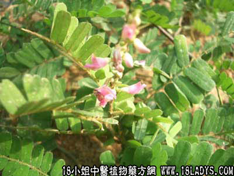

别名：黄食草、细叶龙鳞草。
植物名：毛相思子。
生长环境：本品为披散灌木。生于丘陵、山坡向阳地方。
分布：仅分布于广东和广西。
入药部分：全株。
采集期：六、七月。
采购地点：从药材公司购入。
性味：性凉、味平淡。
功能：平肝、退黄疸、清湿热、利尿。
主治、用量和用法：1、肝热、黄疸：干用1至2两，清水煎服、或加猪瘦肉煎服；2、小便刺痛：用法同上。
（方歌）肝热郁蒸疸症当，色如橘子是阳黄，鸡骨草煲猪瘦肉，既能通利复滋肝。
参考资料：《药材学》功能：主治跌打损伤，瘀血内伤，续筋接骨、黄疸风湿骨痛。可治传染性肝炎。配制方法是将干燥鸡骨草（包括根、茎、叶）和瘦猪肉共煮，火力不宜太猛，在沸腾后继续煎2至3小时即可，剂量为儿童1至2两，成人2至4两，猪瘦肉均为2两，分三次服。
《上海市卫生局、中医研究工作资料汇编第二辑》上海市第二人民医院报告：鸡骨草治黄疸，从1956年冬到1958年春，收儿科黄疸66例（传染性肝炎），其中9例用鸡骨草治疗，10例用菌陈蒿治疗，47例用一般支持疗法（包括用金霉素）。疗效方面，如黄疸消退，肝功能的恢复，鸡骨草组确较其他疗法组为迅速。
附注：双思腾似鸡骨草，应于鉴别。
《广州常用草药验方集解》荔湾区防疫站预防肝炎经验方：鸡骨草一味，预防用量每次1至2两，用水两碗，煎成一碗，儿童酌减；治疗用量每次1至4两，用水四碗，煎成一碗，儿童酌减。
以前在肝炎流行期内，某集体单位先后发现肝炎流行，荔湾区防疫站用上法在290人中进行服食预防，结果无新病例发现，证明本品对肝炎有一定预防作用。
（方解）鸡骨草俗名黄食草，民间称黄疸为黄食病，可知比药治黄疸早为群众所熟悉。按照临床观察，本品性凉，有祛湿利尿清肝、治小便刺痛，去黄疸之功，无副作用。防病服之，简易平稳可靠。
（方歌）预防黄疸有验方，鸡骨草尝一味道香，每剂用药二三两，两碗煎成一碗尝，小童服量应酌减，连续服之病能防。
本文解释权归中药大全，本文地址：https://www.daquan.com/post/1508.html